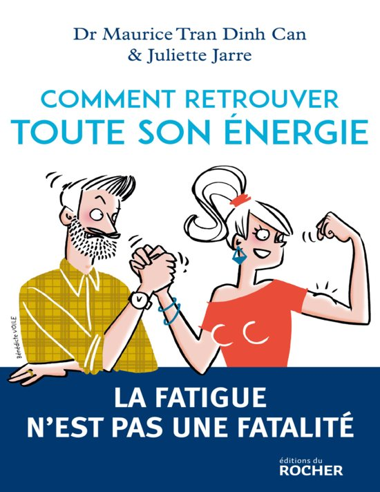

vie-et-societe
Comment retrouver toute son énergie : la fatigue n’est pas une fatalité

PDF non disponible en lecture publique.
Carte d’identité
- Auteur
- Maurice Tran Dinh Can et Juliette Jarre
- Genre
- vie-et-societe
- Pages PDF
- 74
Résumé du livre
Le Dr Maurice Tran Dinh Can et Juliette Jarre abordent la fatigue à partir d’une réflexion sur les habitudes de vie, les sensations corporelles et l’expérience clinique du médecin. Ils invitent le lecteur à reconnaître les signes d’épuisement, à examiner son quotidien et à réfléchir aux moyens de retrouver un meilleur équilibre. L’ouvrage accorde une place importante à l’acupuncture et à l’interprétation de la fatigue proposée par le praticien. Ces propositions reflètent son expérience ; elles ne remplacent ni un diagnostic médical ni la recherche des causes d’une fatigue persistante.
Sections du livre · 13 repères paginés
Repères fondés sur les titres et passages du PDF original. Ce sont des extraits de navigation, pas des résumés analytiques de chaque chapitre.
01Dedication 1PDF p. 6
Repère tiré du texte : À mes enfants et petits-enfants À ma famille À mes amis À mes patients
Lecture PDF indisponible02Dedication 2PDF p. 7
Repère tiré du texte : Cet ouvrage est le fruit d’une réflexion entre le Dr Maurice Tran Dinh Can et Juliette Jarre.
Lecture PDF indisponible03PreambulePDF p. 8
Repère tiré du texte : Préambule Voici plus de quarante ans que je reçois des patients. Durant toutes ces années, j’ai acquis une expérience que j’ai sans cesse questionnée, pour comprendre ce que je mettais en œuvre par ma pratique. C’est une chose assez extraordinaire de voir que certains gestes ont une action d’une grande efficacité sur des patients, alors que l’on a acquis un…
Lecture PDF indisponible04Avant-proposPDF p. 9
Repère tiré du texte : Pendant toutes mes études de médecine, et au fil des années de pratique, un émerveillement m’est toujours resté : celui que j’ai éprouvé en comprenant à quel point le corps humain est une machine extraordinaire. Imaginez seulement la multitude d’événements qui se déroulent simultanément dans notre organisme, la complexité des équilibres vitaux, l’harmonie…
Lecture PDF indisponible05Cette fatigue qui nous plombePDF p. 15
Repère tiré du texte : Vous connaissiez peut-être déjà la plupart des signes. Les courbatures, le manque d’entrain, la mauvaise humeur… Tout ce que vous ressentez est plus ou moins désagréable, pénible, mais vous avez sûrement appris à faire avec… Maintenant, essayons de comprendre pourquoi nous ressentons ces symptômes. Muscles fatigués Prenons les courbatures, par exemple.…
Lecture PDF indisponible06Le cerveauPDF p. 18
Repère tiré du texte : humain est une mécanique fantastique, qui, comme toute mécanique, doit obéir aux lois universelles des mécaniques : ne pas franchir ses limites et satisfaire ses besoins. Le cerveau, en tant qu’organe central de notre corps, communique avec toutes les autres parties. Il donne des ordres, régule, organise, coordonne. Un travail complexe ! Transmission des…
Lecture PDF indisponible07La fatigue du cerveauPDF p. 23
Repère tiré du texte : La fatigue est là pour nous donner des indications précieuses, comme nous l’avons vu, à l’instar de tous les signaux physiologiques qui se manifestent pour nous rappeler nos besoins fondamentaux : la faim, la soif, etc. Elle existe pour nous aider à vivre, à mieux vivre. En nous indiquant le moment où nous devons nous reposer, elle sert l’intérêt de notre…
Lecture PDF indisponible08Les effets de la fatigue : la somatisationPDF p. 26
Repère tiré du texte : Quand il a besoin de repos, parce qu’il a été trop sollicité, trop longtemps, le cerveau exprime ce besoin par un signal de fatigue. Tous les êtres vivants répondent instinctivement à ce signal de fatigue par du repos… tous, sauf une espèce rebelle, qui résiste encore et toujours : l’homme. Le cerveau réitère alors sa demande de façon beaucoup plus aiguë.…
Lecture PDF indisponible09Comment en suis-je arrivé à me passionner pour la fatigue ?PDF p. 36
Repère tiré du texte : Qui suis-je ? À cause de ses opinions politiques, mon père, militaire vietnamien, a dû s’exiler en France avec toute sa famille. C’était en 1955. J’avais dix ans. Mes études secondaires se sont déroulées au lycée Jean-Baptiste-Say (à Paris, dans le XVIe arrondissement), dans des classes qui préparaient à l’école des Arts et Métiers. Puis, j’ai décidé de…
Lecture PDF indisponible10Connaître et comprendre sa fatigue… pour mieux lui dire au revoir !PDF p. 47
Repère tiré du texte : La fatigue a une grande utilité, comme tous les autres signaux physiologiques tels que la faim ou la soif. Elle est là pour nous aider à vivre, à mieux vivre. En nous indiquant le moment où nous devons nous reposer, elle sert l’intérêt de notre cerveau, elle l’aide à maintenir sa performance, pour notre plus grand bien. Il n’est pas dans les habitudes de…
Lecture PDF indisponible11Sortir de la fatigue pour retrouver une bonne santéPDF p. 56
Repère tiré du texte : Le sommeil est la clé du repos. Lapalissade, me direz-vous ? Oui, certes, mais compte tenu du nombre de personnes fatiguées, il me semble indispensable de le rappeler ! Mais alors pourquoi n’utilisons-nous pas ce remède si simple, si immédiat ? Généralement parce que, malgré son évidence, il nous échappe. Difficile de décréter que l’on va dormir……
Lecture PDF indisponible12Retrouver notre équilibre, préserver notre « écologie interne »PDF p. 64
Repère tiré du texte : J’ai toujours été sensible à une pratique des médecins chinois que je trouve particulièrement sensée : dans l’ancien temps, ceux-ci ne se faisaient payer que lorsque leurs patients étaient en bonne santé. À la moindre trace de maladie, ils les traitaient gratuitement… C’est une manière de renverser le point de vue sur le soignant que j’aime beaucoup !…
Lecture PDF indisponible13ConclusionPDF p. 69
Repère tiré du texte : Vous voilà maintenant seuls face à votre fatigue. Seuls ? Pas tout à fait, quand même. Vous avez maintenant des outils en main pour la détecter, la comprendre, la combattre. Le premier pas, le plus important, est l’acceptation de cette fatigue, le fait de la reconnaître pour ce qu’elle est : un véritable problème à prendre en compte. Je vais vous dire une…
Lecture PDF indisponible